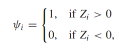
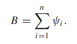

Roughly speaking, a nonparametric procedure is a statistical procedure that has certain desirable properties that hold under relatively mild assumptions regarding the underlying populations from which the data are obtained.
Nonparametric methods require few assumptions about the underlying populations from which the data are obtained. In particular, nonparametric procedures forgo the traditional assumption that the underlying populations are normal.
Nonparametric Statistical Methods
Nonparametric techniques are often (although not always) easier to apply than their normal theory counterparts and, are often quite easy to understand.
Although at first glance most nonparametric procedures seem to sacrifice too much of the basic information in the samples, theoretical efficiency investigations have shown that this is not the case.
Nonparametric Statistical Methods
Usually, the nonparametric procedures are only slightly less efficient than their normal theory competitors when the underlying populations are normal and they can be mildly or wildly more efficient than these competitors when the underlying populations are not normal.
Nonparametric methods are relatively insensitive to outlying observations.
Many nonparametric procedures require just the ranks of the observations, rather than the actual magnitude of the observations, whereas the parametric procedures require the magnitudes.
One-Sample Location Problem
The procedures under this topic are designed for statistical analyses in which primary interest is centered on the location (median) of a population.
We encounter two types of data for which such analyses are important.
One-Sample Location Problem
The first of these, referred to as one-sample data, consists of observations from a single population about whose location we wish to make inferences.
The second type of data, referred to as paired sample data, represents pairs of “pre-treatment” and “post-treatment” observations; here,we are concerned with a shift in location due to the application of the “treatment.”
Sign Test (One-sample)
Consider the null hypothesis \(H_0: \tilde \mu = \tilde \mu_0\) with any of three alternative hypotheses,
\(H_1: \tilde \mu \ne \tilde \mu_0\)
\(\qquad \tilde \mu < \tilde \mu_0\)
\(\qquad \tilde \mu > \tilde \mu_0\)
Sign Test (One-sample)
To compute the sign statistic \(B\), define indicator variables \(\psi_i, i=1,2,\dots,n\), where

and set

Here \(Z_i = X_i-\tilde \mu_0\). The sign statistic \(B\) is the number of positive \(Z\)’s.
Sign Test (One-sample) in R
We can use binom.test(B,n) to perform sign test in R where \(B\) is the sign statistic and \(n\) is the sample size after removing the ties.
library(stats)# When the number of successes is 3 with n=10binom.test(3,10,alternative ='two.sided') #Two-sided test
Exact binomial test
data: 3 and 10
number of successes = 3, number of trials = 10, p-value = 0.3438
alternative hypothesis: true probability of success is not equal to 0.5
95 percent confidence interval:
0.06673951 0.65245285
sample estimates:
probability of success
0.3
Sign Test (One-sample) in R
binom.test(3,10, alternative ='greater') # One-sided upper tail test
Exact binomial test
data: 3 and 10
number of successes = 3, number of trials = 10, p-value = 0.9453
alternative hypothesis: true probability of success is greater than 0.5
95 percent confidence interval:
0.08726443 1.00000000
sample estimates:
probability of success
0.3
binom.test(3,10, alternative ='less') # One-sided lower tail test
Exact binomial test
data: 3 and 10
number of successes = 3, number of trials = 10, p-value = 0.1719
alternative hypothesis: true probability of success is less than 0.5
95 percent confidence interval:
0.0000000 0.6066242
sample estimates:
probability of success
0.3
Sign Test (One-sample) in R: Example
The following data represent the number of hours that a rechargeable hedge trimmer operates before a recharge is required:
Use the sign test to test the hypothesis, at the 0.05 level of significance, that this particular trimmer operates a median of 1.8 hours before requiring a recharge.
Now let’s compute the sign statistic \(B\) which is the number of observations higher than 1.8.
B <-sum(hours >1.8)B
[1] 3
Sample size after discarding the tied observations:
n <-sum(hours !=1.8)n
[1] 10
Sign Test (One-sample) in R: Example
Now let’s compute the P-value by using binom.test().
binom.test(B,n,alternative ='two.sided') #Two-sided test
Exact binomial test
data: B and n
number of successes = 3, number of trials = 10, p-value = 0.3438
alternative hypothesis: true probability of success is not equal to 0.5
95 percent confidence interval:
0.06673951 0.65245285
sample estimates:
probability of success
0.3
Since P-value > 0.05, we do not reject \(H_0\).
We don’t have sufficient evidence to say that the median operating time is significantly different from 1.8 hours at 5% level of significance.
Sign Test (Paired-sample)
Consider the null hypothesis \(H_0: \tilde \mu_1 - \tilde \mu_2 = d_0\) with any of three alternative hypotheses,
Now, \(Z_i = X_i-Y_i\). The sign statistic \(B\) is the number of positive \(Z\)’s.
Sign Test (Paired-sample) in R: Example
Consider the Blood dataset in BSDA R package which contains Blood pressure of 15 adult males taken by machine and by an expert. Can we conclude that the measurements taken by the machine and by the expert are different at 5% significance level?
Let \(\tilde \mu_M\) be the median of the blood pressure taken by the machine and \(\tilde \mu_E\) be the median of the blood pressure taken by the expert.
Consider the hypotheses \(H_0: \tilde \mu_M - \tilde \mu_E=0\) vs \(H_1: \tilde \mu_M - \tilde \mu_E \ne 0\)
Now let’s compute the sign statistic \(B\) which is the number of \(Z_i\)’s higher than 0.
B <-sum(Z >0)B
[1] 8
Sign Test (Paired-sample) in R: Example
Sample size after discarding the tied observations:
n <-sum(Z !=0)n
[1] 14
Now let’s compute the P-value by using binom.test().
binom.test(B,n,alternative ='two.sided') #Two-sided test
Exact binomial test
data: B and n
number of successes = 8, number of trials = 14, p-value = 0.7905
alternative hypothesis: true probability of success is not equal to 0.5
95 percent confidence interval:
0.2886094 0.8233889
sample estimates:
probability of success
0.5714286
Sign Test (Paired-sample) in R: Example
Since P-value > 0.05, we do not reject \(H_0\).
We do not have sufficient evidence to say that the measurements taken by the machine and by the expert are different at 5% significance level.
Wilcoxon Signed Rank Test (One-sample)
Wilcoxon Signed Rank Test consider the sign and the magnitude of the difference between the observation and the null value.
It also can be used to test the null hypothesis \(H_0: \tilde \mu = \tilde \mu_0\) with any of three alternative hypotheses,
\(H_1: \tilde \mu \ne \tilde \mu_0\)
\(\qquad \tilde \mu < \tilde \mu_0\)
\(\qquad \tilde \mu > \tilde \mu_0\)
Wilcoxon Signed Rank Test (One-sample) in R
To perform one-sample Wilcoxon Signed Rank test, the R function wilcox.test() can be used
wilcox.test(x, mu = 0, alternative = "two.sided")
where, - x: a numeric vector containing your data values
mu: the theoretical mean/median value. Default is 0 but you can change it.
alternative: the alternative hypothesis. Allowed value is one of “two.sided” (default), “greater” or “less”.
Wilcoxon Signed Rank Test (One-sample) in R: Example
Let’s consider the same example which gives the number of hours that a rechargeable hedge trimmer operates before a recharge is required in slide 11.
wilcox.test(hours, mu =1.8, alternative ="two.sided")
Wilcoxon signed rank test with continuity correction
data: hours
V = 13, p-value = 0.1522
alternative hypothesis: true location is not equal to 1.8
This also makes the same conclusion that was made by the sign test.
Wilcoxon Signed Rank Test (Paired-sample) in R: Example
Now we use the Blood dataset to illustrate the paired sample case of Wilcoxon Signed Rank Test in R.
wilcox.test(Blood$machine, Blood$expert, paired=TRUE, alternative ="two.sided")
Wilcoxon signed rank test with continuity correction
data: Blood$machine and Blood$expert
V = 64, p-value = 0.489
alternative hypothesis: true location shift is not equal to 0
This also makes the same conclusion that was made by the sign test.
Corresponding Parametric test
Sign test and Wilcoxon signed rank test (one-sample) are nonparametric alternatives for the one sample t- test when the data violate the normality assumption.
Sign test and Wilcoxon signed rank test (paired-sample) are nonparametric alternatives for the paired sample t- test when the data violate the normality assumption.
Mann-Whitney U Test (Wilcoxon Rank- Sum Test)
When we are interested in testing equality of means of two continuous distributions that are obviously non-normal, and samples are independent (i.e., there is no pairing of observations), the Mann-Whitney U test (Wilcoxon rank-sum test) is an appropriate alternative to the two-sample t-test.
Here we test the null hypothesis \(H_0\) that \(\tilde \mu_1 = \tilde \mu_2\) against some suitable alternative.
Mann-Whitney U Test (Wilcoxon Rank- Sum Test) in R: Example
Consider the Autogear dataset in BSDA R package which contains the number of defective auto gears produced by two manufacturers.
data("Autogear")head(Autogear)
defectives manufacturer
1 16 A
2 25 A
3 15 A
4 26 A
5 21 A
6 22 A
Suppose that we are interested to test whether the number of defective auto gears produced by manufacturer A is higher than that of manufacturer B at 5% significance level.
Mann-Whitney U Test (Wilcoxon Rank- Sum Test) in R: Example
Consider the hypotheses,
\(H_0: \tilde \mu_A = \tilde \mu_B\) vs
\(H_1: \tilde \mu_A > \tilde \mu_B\)
wilcox.test(defectives ~ manufacturer,alternative ='greater', data = Autogear) # y ~ group
Wilcoxon rank sum test with continuity correction
data: defectives by manufacturer
W = 114.5, p-value = 0.9902
alternative hypothesis: true location shift is greater than 0
There are insufficient evidence to say that the number of defective auto gears produced by manufacturer A is higher than that of manufacturer B at 5% significance level.
Wald-Wolfowitz Runs Test
The Wald-Wolfowitz runs test is a statistical procedure that examines whether a sequence of data is occurring randomly from a specific distribution (in one sample case) or evaluates if two continuous cumulative distributions are significantly different or not (in two sample case).
Wald-Wolfowitz Runs Test (One-sample) in R
Here we test the hypotheses,
\(H_0:\) The data sequence is random Vs
\(H_1:\) The data sequence is non-random.
First let’s generate some random numbers to use as the observed data sequence.
Runs Test for Randomness
data: x
runs = 9, m = 10, n = 10, p-value = 0.4844
alternative hypothesis: true number of runs is not equal the expected number
sample estimates:
median(x)
-0.08275319
Do not reject \(H_0\) and conclude that data sequence is random at 5% level of significance.
Wald-Wolfowitz Runs Test (Two-sample)
Wald-Wolfowitz Two-sample Run test is used to examine whether two random samples came from population having same distribution.
Here we test the hypotheses:
\(H_0:\) Two populations have the same distribution Vs
\(H_1:\) Two populations have different distributions
Wald-Wolfowitz Runs Test (Two-sample) in R
First let’s simulate data from two different distributions to use.
set.seed(10)x <-rnorm(20) # From standard normal distributionx
Now let’s test whether the two samples \(x\) and \(y\) have the same distribution by using runs test.
RunsTest(x,y)
Wald-Wolfowitz Runs Test
data: x and y
z = -1.762, runs = 15, m = 20, n = 20, p-value = 0.07807
alternative hypothesis: true number of runs is not equal the expected number
We do not reject the null hypothesis at 5% level of significance but it can be rejected at 10% level of significance.
The independence problem
Here we are interested to check whether the given two variables are independent or not.
Consider the null hypothesis, \(H_0:\) The two variables are independent
with one of the three alternative hypotheses
\(H_1:\) The two variables are positively correlated,
The two variables are negatively correlated,
The two variables are associated
The independence problem in R
The nonparametric procedures that can be used to test the independence are Kendall’s Tau Correlation Test and Spearman’s Rho Correlation Test.
We can use cor.test() R function to perform both procedures.
Kendall’s Tau Correlation Test in R: Example
Consider the Brain dataset in BSDA R package which contains brain weight and body weight of 28 animals. Suppose we are interested to test whether the brain weight and body weight are positively correlated at 5% level of significance by using Kendall’s Tau Correlation Test.
cor.test(Brain$brainweight, Brain$bodyweight, method ="kendall", alternative ="greater")
Kendall's rank correlation tau
data: Brain$brainweight and Brain$bodyweight
z = 4.6042, p-value = 2.071e-06
alternative hypothesis: true tau is greater than 0
sample estimates:
tau
0.6172191
Kendall’s Tau Correlation Test in R: Example
P-value is less than 0.05. So We reject \(H_0\).
We can conclude that the brain weight and body weight of animals are positively correlated at 5% level of significance.
Spearman’s Rho Correlation Test in R: Example
Now let’s use Spearman’s Rho Correlation Test for the Brain dataset to test the hypotheses in previous example.
Hypotheses can be written as,
\(H_0: \rho = 0\) vs \(H_1: \rho > 0\).
Spearman’s Rho Correlation Test in R: Example
cor.test(Brain$brainweight, Brain$bodyweight, method ="spearman", alternative ="greater")
Spearman's rank correlation rho
data: Brain$brainweight and Brain$bodyweight
S = 1036.6, p-value = 9.064e-06
alternative hypothesis: true rho is greater than 0
sample estimates:
rho
0.7162994
Here also we reject \(H_0\) and conclude that the brain weight and body weight of animals are positively correlated at 5% level of significance.
Kruskal-Wallis Test
Kruskal-Wallis test is a nonparametric alternative test to the one-way ANOVA and can be used when data are not coming from normal populations.
It is used to test the null hypothesis \(H_0\) that \(k\) independent samples are from identical populations.
Kruskal-Wallis Test
For \(k\) medians, we test the hypotheses,
\[H_0: \tilde \mu_1 = \tilde \mu_2 = \dots =\tilde \mu_k\]\[Vs\]\[H_1: \text{ At least two of the medians are not equal}\]
where \(\tilde \mu_i\) is the median of the \(i^{th}\) level of the factor.
Multiple Comparisons
Kruskal-Wallis test only can test if there is any difference among \(k\) treatments.
When \(H_0\) is rejected, we are interested to know which treatments are differs from the others.
We can use multiple comparison methods to do this, and they conduct an analysis of all possible pairwise medians.
Kruskal-Wallis Test in R
kruskal.test() R function can be used to perform Kruskal-Wallis test in R.
Consider the Carbon dataset in BSDA R package which contains carbon monoxide level measured at three industrial sites. Let’s perform Kruskal-Wallis test to check whether the CO levels at three industrial sites are same or not.
Kruskal-Wallis Test in R: Example
Consider the hypotheses,
\[H_0: \tilde \mu_A = \tilde \mu_B =\tilde \mu_C\]\[Vs\]\[H_1: \text{ At least two of the medians are not equal}\]
Kruskal-Wallis Test in R: Example
data("Carbon")head(Carbon)
CO site
1 0.106 siteA
2 0.127 siteA
3 0.132 siteA
4 0.105 siteA
5 0.117 siteA
6 0.109 siteA
kruskal.test(CO ~ site, data = Carbon)
Kruskal-Wallis rank sum test
data: CO by site
Kruskal-Wallis chi-squared = 4.9083, df = 2, p-value = 0.08594
We do not reject \(H_0\) at 5% level of significance.
So, we conclude that the CO levels at three industrial sites are same at 5% signifcance level.
Pairwise comparisons in R
Let’s consider the iris dataset and perform the Kruskal-Wallis test. Suppose that you want to know if there is a statistical difference between the mean of the sepal length according to the type of the iris plant.
data("iris")kruskal.test(Sepal.Length ~ Species, data = iris)
Kruskal-Wallis rank sum test
data: Sepal.Length by Species
Kruskal-Wallis chi-squared = 96.937, df = 2, p-value < 2.2e-16
Since the Kruskal-Wallis test reject the null hypothesis, now we need to identify the different pairs of medians of the species
Pairwise comparisons in R
We use pairwise.wilcox.test() R function for this with adjusting methods such as ‘Bonferroni’, ‘BH’, ‘holm’, ‘Hochberg’.
Pairwise comparisons using Wilcoxon rank sum test with continuity correction
data: iris$Sepal.Length and iris$Species
setosa versicolor
versicolor 2.5e-13 -
virginica < 2e-16 1.8e-06
P value adjustment method: bonferroni
Based on P-values < 0.05, all the three species combinations are differ according to the Sepal Length.
Friedman Test
The Friedman test determines if there are differences among groups for a two-way layout.
In this design, one variable serves as the treatment or group variable, and another variable serves as the blocking variable.
This test is appropriate when the data are non-normally distributed.
Friedman Test
Suppose there are \(k\) treatments and \(n\) blocks in the study. Then we want to test,
\(H_0: \tau_1 = \tau_2 = \dots = \tau_k\) vs
\(H_1: \tau_1, \tau_2, ... \tau_k\) not all are equal
where \(\tau_i\) is the \(i^{th}\) treatment effect.
Friedman Test in R
We can use friedman.test() R function to performe the Friedman test in R.
A researcher wants to evaluate the efficacy of different plant varieties on bacterial disease severity at different locations. The dependent variable is the disease severity index measured on an ordinal scale (1 to 5, with 1 being no disease and 5 being severe disease symptoms). Plant varieties and locations are independent variables. To check whether locations have an effect on disease severity on each plant variety, the researcher evaluated the disease severity index for each plant variety at different locations.
Friedman Test in R: Example
library(tidyverse)#Import the datadf=read_csv("https://reneshbedre.github.io/assets/posts/anova/plant_disease_friedman.csv")head(df)
friedman.test(y = df_long$disease, groups = df_long$locations, blocks = df_long$plant_var)
Friedman rank sum test
data: df_long$disease, df_long$locations and df_long$plant_var
Friedman chi-squared = 9.8478, df = 3, p-value = 0.0199
Friedman test results indicate that there are significant differences in disease severity in plant varieties based on their locations at 5% level of significance.